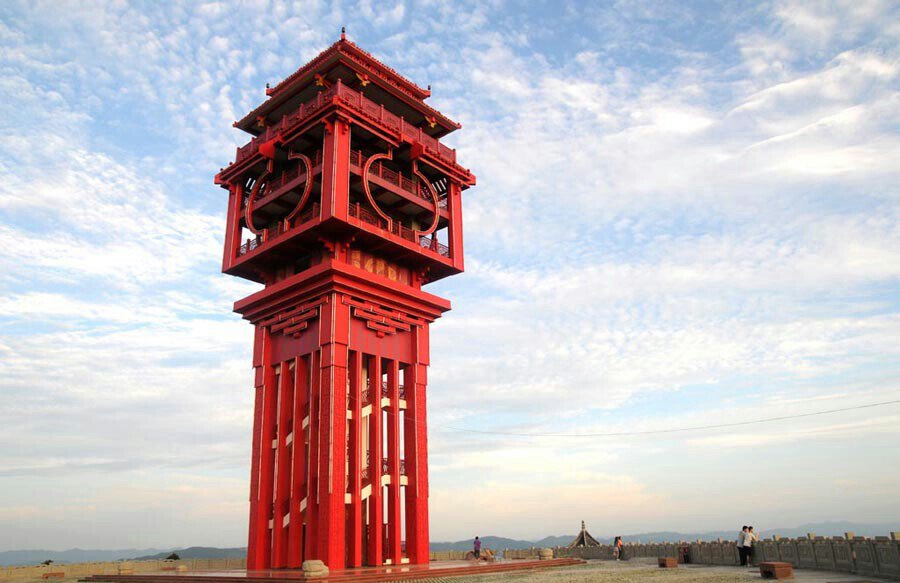
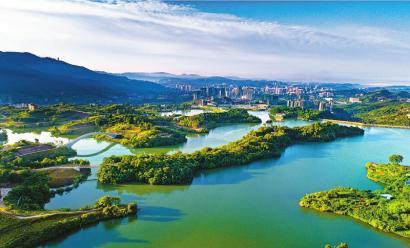

| 欢迎来到“你好，达州”！ | |
本网站内容建议采用Chrome浏览 达州，四川省地级市，位于四川省东部，自东汉建县至今已有1900多年的历史，历为该地区州、郡、府、县所在地。达州幅员面积16591平方公里，辖2个市辖区（通川区、达川区）、4个县（宣汉县、开江县、大竹县、渠县）、代管1个县级市（万源市），另附加一个经济开发区，总人口690万人（截至2018年12月，达州中心城区建成面积100平方公里、人口102.5万人）。 |
|
|  | 达州市是四川省人口大市、农业大市、资源富市、工业重镇、交通枢纽和革命老区；达州罗家坝遗址、城坝遗址，是长江上游古代巴人和巴文化中心遗址的发源地；是四川巴渠文化的中心地带；是全国三大气田之一和国家"川气东送"的起点站；是国家天然气综合开发利用示范区；是国家重要能源资源战略基地；素有"巴人故里、中国气都"之称。
|
| (标志性的红色凤凰塔) | |
|  | 达州是国家规划定位的成渝经济圈、川东北城市群重要节点城市；是四川对外开放的"东大门"和四川重点建设的百万人口区域中心城市；是中国公路运输主枢纽和四川省区域性次级枢纽城市；是商贸服务型国家物流枢纽承载城市；是四川省通江达海的东通道；是建设四川东出北上综合交通枢纽和川渝陕结合部区域中心城市。
|
| (莲花湖) | |
达州物产丰饶，资源富集。享有中国苎麻之乡、中国黄花之乡、中国油橄榄之都、中国富硒茶之都、中国香椿第一县的美称。2016年7月，达州被命名为全国双拥模范城 ；2016年12月，被列为第三批国家新型城镇化综合试点地区；2016年12月，被推选为2016中国特色魅力城市。
|
|
| (红军亭) | |